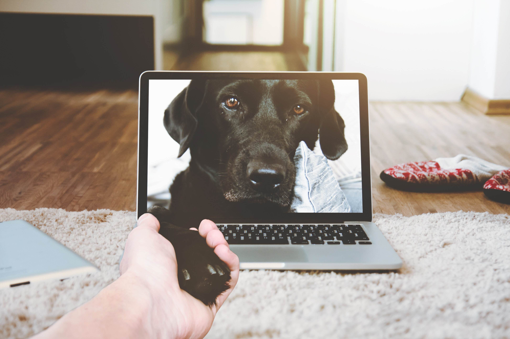
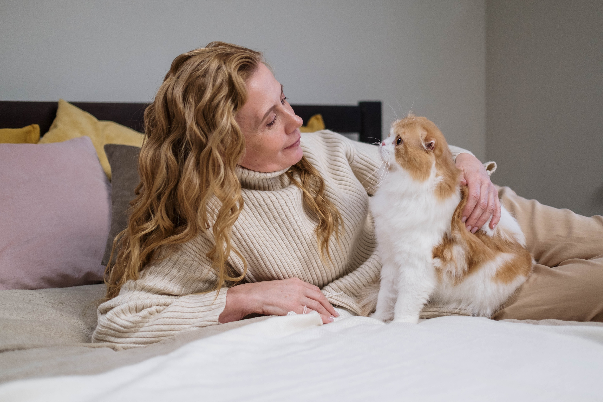
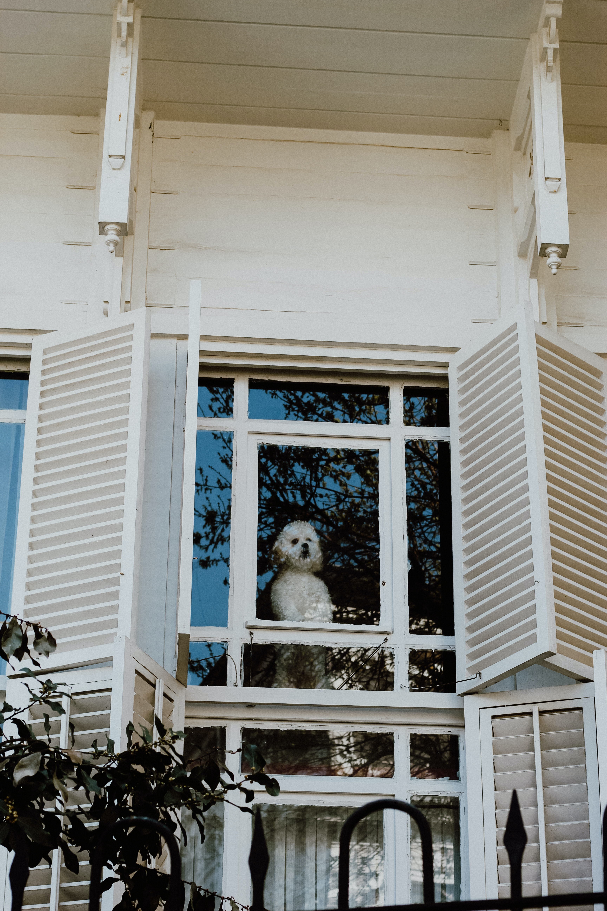

Human-animal relations are often considered some of the strongest and most reliable relations a person may experience.
Despite the attachment behind these relations, humans and their pets will always find times in which they are separated.

“Separation Anxiety” and similar consequences are quite common among pets - But what if we could use technology to solve this?
Technology - The great connector

Technology is already used daily, to bridge physical, emotional, and mental gaps between people - Can we use this for human-animal relations?
If technology is implemented and focused on, can we reduce the discomfort of separation? Make interactions with animals easier?

The technology needed already exists - We just need to develop and remodel it in new and unique ways. Pets can see and hear - Technology allows these senses to go over long distances.
Ideas - How do we breach this gap?

Pets and humans recognise each other through visual and auditory mediums. Custom software and hardware can allow both parties to interact over long distances.

Imagine a mobile application that allows a 2-way stream across your phone and a device at home, allowing you to interact with your pet at will - Despite the physical gap, the communicative one has been breached.
Animals are capable of recognising patterns, whether audio or visual - Many can respond to certain stimuli by pressing custom buttons and such. Can we connect this to an application?
What else - Technological possibilities

Wireless pet technologies already exist - Bowls and pet-doors that respond to microchips are one such example. What if pets could communicate their needs and wants through custom hardware and software making use of this technology?

Could we connect custom buttons to an application? A system in which pets could request for certain things, like a door being opened, by using such a button. The owner could then use a button on the application to open the door wirelessly.

The inclusion of 2-way tracking technologies can also bridge the gap, allowing both animal and human to better recognise distance. Despite the physical distance, humans and animals could better communicate, allowing us to understand the needs and wants of our pets to a greater extent. Physical limits need not hinder the interactions between humans and animals.